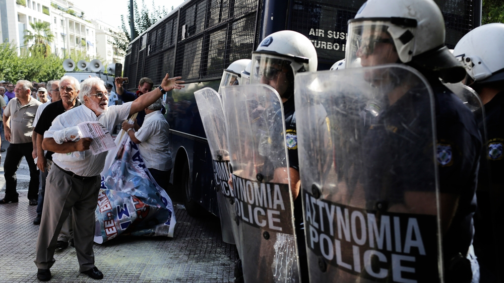
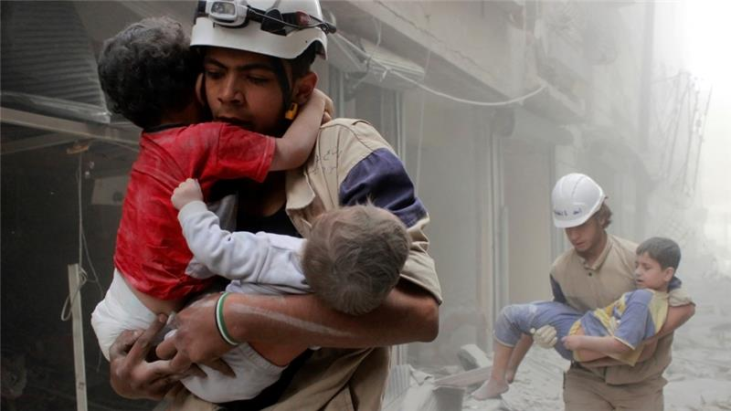
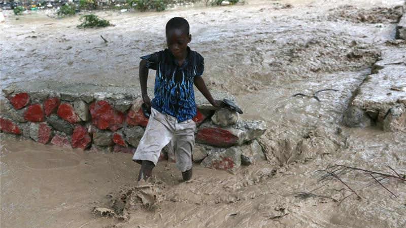
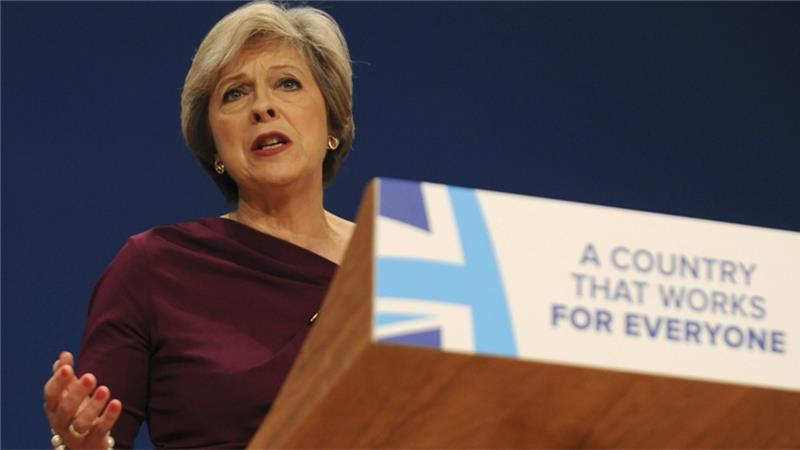
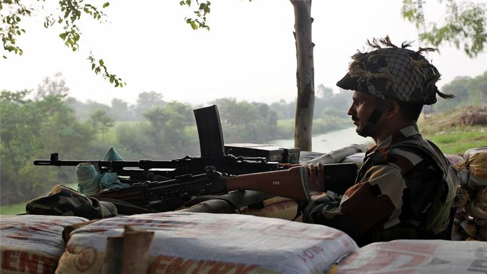
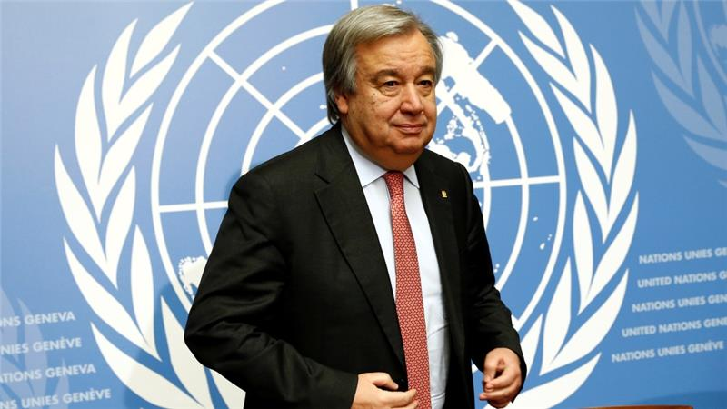

THE NEW ECONOMIST
News
Journal
Charts
Data
International News

Greek police fire tear gas on rallying pensioners
Athens, Greece - Riot police used tear gas to disperse protesting pensioners, causing widespread outrage and forcing the government to ban the tactic in future. Thousands of pensioners...

Aleppo's White Helmets reject foreign influence claims
Members of the Syrian Civil Defence units - or White Helmets - have dismissed claims that they are biased actors in the conflict following a controversial report linking the organisation to alleged US government attempts to overthrow the Syrian government.

Hurricane Matthew kills 11 as it slams into Bahamas
Hurricane Matthew, the fiercest Caribbean storm in nearly a decade, made landfall in the Bahamas on Wednesday after battering Haiti, Cuba and the Dominican Republic with torrential rains, killing at least 11 people.

UK Conservative party's migration comments prompt anger
Comments made by senior British ministers proposing stricter immigration rules have provoked an angry backlash from government opponents and business leaders alike. In a series of interviews and speeches at the ruling-Conservative party conference...

India-Pakistan armies exchange more fire in Kashmir
Artillery fire continued between nuclear-armed rivals Pakistan and India across the de facto border in Kashmir as tensions ratchet up after a deadly attack on Indian soldiers last month.

Portugal's Guterres looks set to become next UN chief
Former Portuguese prime minister Antonio Guterres has been tipped as the next United Nations secretary-general after none of the five Security Council veto-wielding powers voted against him in a sixth secret ballot on Wednesday...